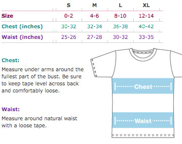

womens tee:

fancy words:
Slightly scooped neckline.
Ultra-comfy, feels like you’ve owned it for years the moment you put it on, and for years to come.
Poly-Cotton (50% Polyester / 50% Cotton) construction
Durable rib neckband
Form-fitting